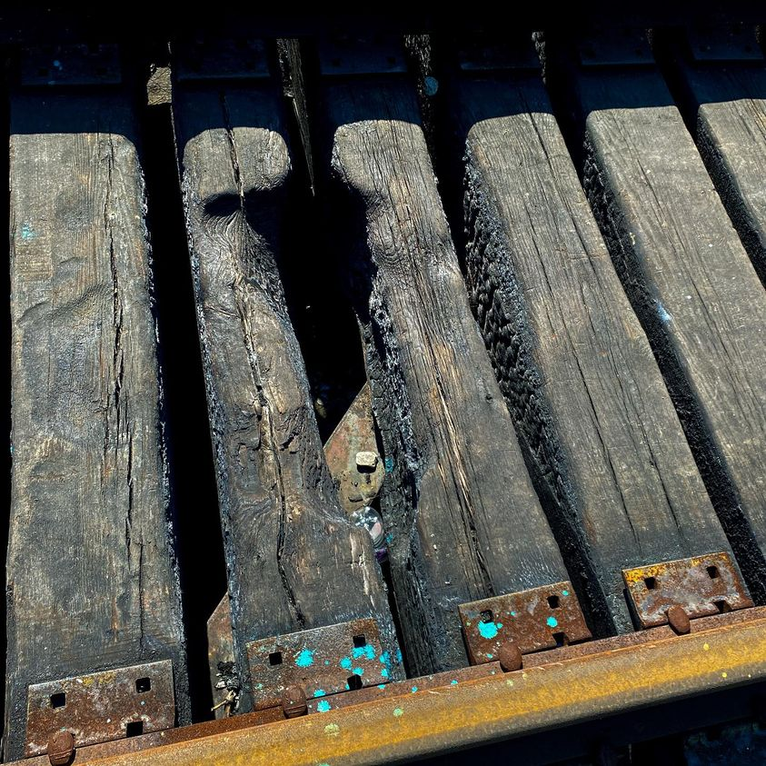

Timeline photos
This is a picture of a small bridge trains cross. This wood has been burned.
It’s near a place where homeless people live. Undoubtedly, a homeless person did this. And the only reason a person would do this is for destruction.
When I first saw this, my initial reaction was anger at whatever homeless person who did this. There has been an increase in tent burnings as well.
But then my anger turned towards the Democrats who run Akron and every other major city in America. The Democrat plan is to ignore these people. So not only does that hurt the homeless community, it hurts the business owners and residents of the city just as much.
You can’t just leave these people unattended. (You can’t leave any people unattended. They will destroy civilization.) But people who have been living alone and separated from the rest of society because society hates them are far too wild and chaotic to be left to their own devices in abandoned houses and in the woods.
There is a couple year old house that was recently built just for chronically homeless people. I’ve been told that everyone has been evicted and there is $12,000 worth of repairs to be made on the property. I’m going to try to check that out this week.
I’ll say it till I’m blue in the face: We need structured tent camps that are staffed and monitored for theft, violence and destruction. There is truly no other choice for this segment of the homeless population.